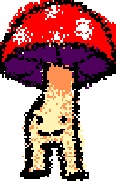

mblep - album
genre: electronic (i think? whatever genre most of toby fox's music is considered as lol)
fully instrumental
released on 13/11/25 (DD/MM/YY)
number of songs - 14
includes bonus section
runtime - main section approx 28:08
bonus section approx 13:11
total approx 41:32
made in ultrabox
many many manyyy samples taken from kommit's sample repo (the whole site's pretty awesome and inspired me to make this one so i suggest you look around there)
my first album consisting of some of the first songs i've made that i'm proud of!
i've showed it around to people i know and everybody says it's soooo cool.
very inspired by the soundtracks of undertale, deltarune (+ their fantracks), terraria (+ calamity mod) and other bits and bobs that've stood out to me.
overall i think it's pretty solid for my first album. it's all quirked up and radical and i like to listen to it whilst doing homework or chores or whatever. but i have a few gripes, like the cover. i just think it doesn't fit that well and i've improved in pixel art since then.
and yeah i chose that release date so i could say "look for my album on november 13th" like the gummy bear music video
maybe someday i could give it a remaster? like especially once i've learned fl studio. i'd definitely give it a name with an actual meaning then lol
1. Zone
Zone (file garden)
Zone (ultrabox)
it's my dad's favourite 🥹
the name 'zone' is a dumb sonic ref because it uses the sega genesis soundfont. (i've never played a sonic game I KNOW I KNOW im such a fake fan)
inspired by flying battery zone and rude buster
2. Well Well Well Look What We Have Here
Well Well Well Look What We Have Here (file garden)
Well Well Well Look What We Have Here (ultrabox)
has high school movie bully/cool kid energy
one of my favourites
short song long name
3. Toadstool Village 
Toadstool Village (file garden)
Toadstool Village (ultrabox)
shortest song in the main section with inspiration from temmie village
back in my day i used to draw these little creatures
my least favourite if i'm honest 😬😬😬 just not much quality nor quantity
4. Ollie
Ollie (file garden)
Ollie (ultrabox)
like the skateboard trick
5. Dungeon Prowl
Dungeon Prowl (file garden)
Dungeon Prowl (ultrabox)
makes you feel like you're prowling a dungeon
somewhat regal and old-timey??
this is like my 2nd place favourite
6. Moonstones
Moonstones (file garden)
Moonstones (ultrabox)
inspired by the world 5 theme in super mario 3d world
this one's one of the better ones. feels spacey and adventurey. like a band of travelleling heroes finding somewhere to settle down for the night.
7. Volcania
Volcania (file garden)
Volcania (ultrabox)
despair and lava and fire
can't remember too well but maybe used this song from pilgrammed as a reference
8. !! Suspicion !!
!! Suspicion !! (file garden)
!! Suspicion !! (ultrabox)
the last song i made for the album in chronological order
9. huh
huh (file garden)
huh (ultrabox)
so hip yo
10. Stark Purple Dream
Stark Purple Dream (file garden)
Stark Purple Dream (ultrabox)
the time signatures in this one were fun to play around with. 'astromantic garden', 'dream under violet sky', 'violet sunset' and 'violet sunrise' were other possible names before 'stark purple dream' was chosen.
11. spooky scary type beat
spooky scary type beat (file garden)
ultrabox link unavailable 😢 i accidentally deleted the .html and emptied my recycling
i have a chiptune version of it if that's okay??
12. Glacia
Glacia (file garden)
Glacia (ultrabox)
despair and ice and frost but with a little bit of hope at the end
i might've taken too much inspiration from glacier, shimmering cold and cold front, all by by ENNWAY!
i really like the end part
13. Evil Machine Battle
Evil Machine Battle (file garden)
Evil Machine Battle (ultrabox)
feels like battling an evil machine. second to last one to be made, so a little rushed. people liked this one more than i thought they would.
14. Evil Wizard Battle
Evil Wizard Battle (file garden)
Evil Wizard Battle (ultrabox)
(i screwed up the ultrabox link by adding too many samples, so it comes up with a window going blahblah every time you open it, but i usually just click okay and have a clicky click around and it works fine.)
feels like battling an evil wizard. very chaotic, arguably the most detailed of the bunch. maybe a little muddy, tho.